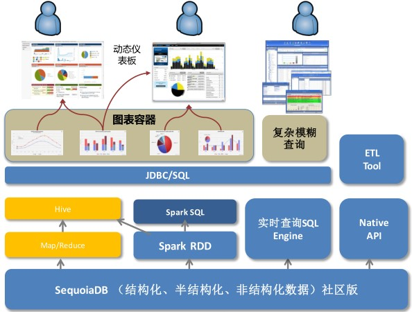

http://www.infoq.com/cn/presentations/big-data-applications-in-financial-industry
[TOC]
Hadoop的13个基本框架
Spark特点
SequoiaDB 特点 - 用JSON 统一存储非结构化/ 半结构化和结构化数据 - 不依赖于Hadoop, 但同时融合SQL/Hadoop/Spark - 擅长在线实时查询和离线统计分析 - 支持交易事务, 但不擅长OLTP - 简化大数据技术堆栈
